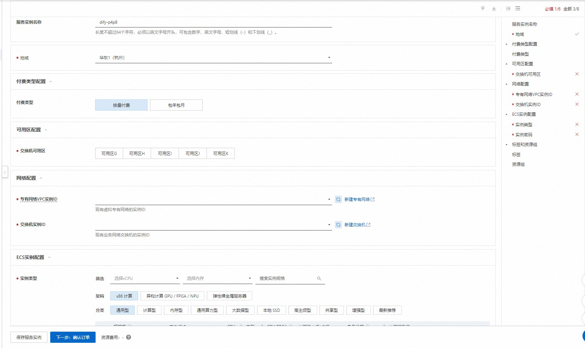
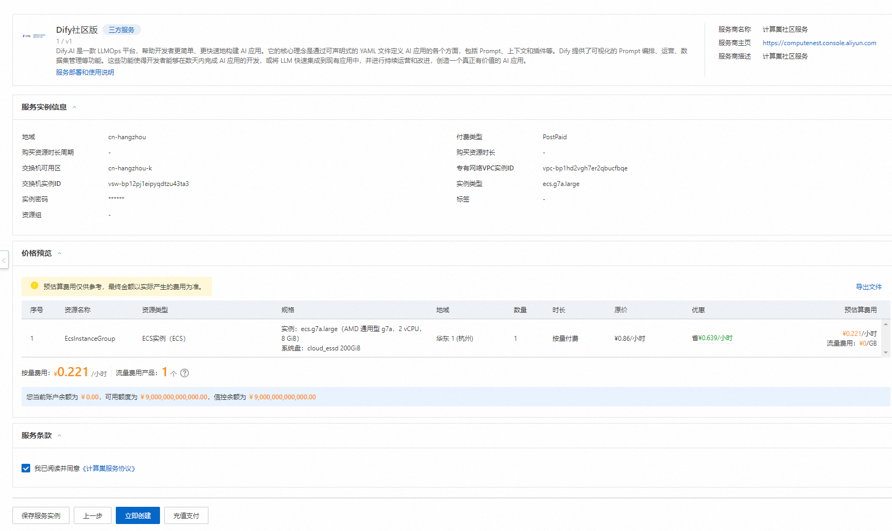
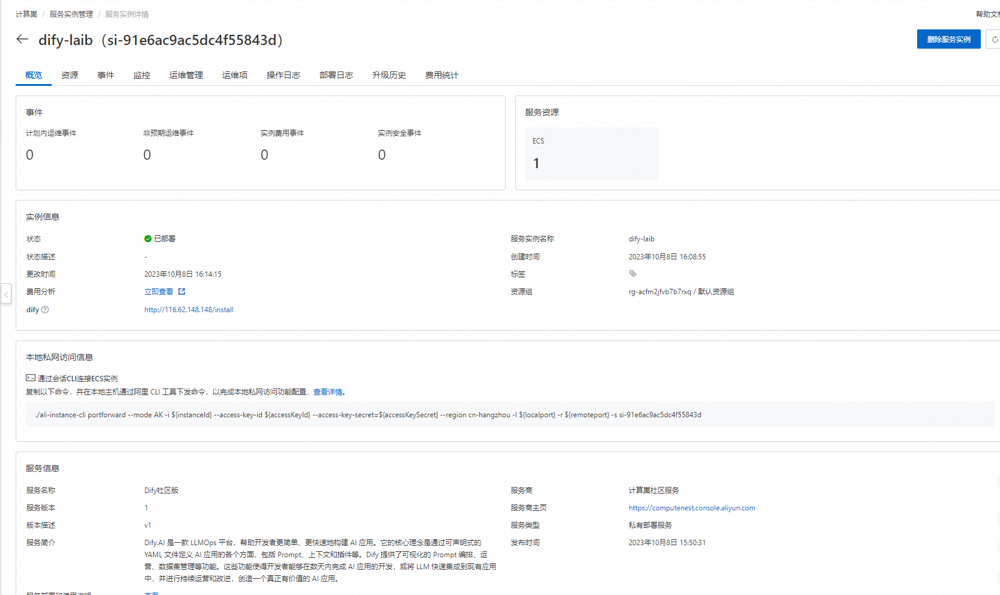

免责声明：本服务由第三方提供，我们尽力确保其安全性、准确性和可靠性，但无法保证其完全免于故障、中断、错误或攻击。因此，本公司在此声明：对于本服务的内容、准确性、完整性、可靠性、适用性以及及时性不作任何陈述、保证或承诺，不对您使用本服务所产生的任何直接或间接的损失或损害承担任何责任；对于您通过本服务访问的第三方网站、应用程序、产品和服务，不对其内容、准确性、完整性、可靠性、适用性以及及时性承担任何责任，您应自行承担使用后果产生的风险和责任；对于因您使用本服务而产生的任何损失、损害，包括但不限于直接损失、间接损失、利润损失、商誉损失、数据损失或其他经济损失，不承担任何责任，即使本公司事先已被告知可能存在此类损失或损害的可能性；我们保留不时修改本声明的权利，因此请您在使用本服务前定期检查本声明。如果您对本声明或本服务存在任何问题或疑问，请联系我们。
概述
Dify.AI 是一款 LLMOps 平台，帮助开发者更简单、更快速地构建 AI 应用。它的核心理念是通过可声明式的 YAML 文件定义 AI 应用的各个方面，包括 Prompt、上下文和插件等。Dify 提供了可视化的 Prompt 编排、运营、数据集管理等功能。这些功能使得开发者能够在数天内完成 AI 应用的开发，或将 LLM 快速集成到现有应用中，并进行持续运营和改进，创造一个真正有价值的 AI 应用。 本方式提供了部署单机版Dify的解决方案，通过Docker Compose快速部署Dify, 此种部署方式不具备高可用、可伸缩的特性，不适合生产环境下使用，推荐用于开发测试。
前提条件
部署Dify社区版服务实例，需要对部分阿里云资源进行访问和创建操作。因此您的账号需要包含如下资源的权限。 说明：当您的账号是RAM账号时，才需要添加此权限。
| 权限策略名称 | 备注 |
|---|---|
| AliyunECSFullAccess | 管理云服务器服务（ECS）的权限 |
| AliyunVPCFullAccess | 管理专有网络（VPC）的权限 |
| AliyunROSFullAccess | 管理资源编排服务（ROS）的权限 |
| AliyunComputeNestUserFullAccess | 管理计算巢服务（ComputeNest）的用户侧权限 |
计费说明
Dify社区版在计算巢部署的费用主要涉及：
- 所选vCPU与内存规格
- 系统盘类型及容量
- 公网带宽
部署架构

参数说明
| 参数组 | 参数项 | 说明 |
|---|---|---|
| 服务实例 | 服务实例名称 | 长度不超过64个字符，必须以英文字母开头，可包含数字、英文字母、短划线（-）和下划线（_） |
| 地域 | 服务实例部署的地域 | |
| 付费类型 | 资源的计费类型：按量付费和包年包月 | |
| ECS实例配置 | 实例类型 | 可用区下可以使用的实例规格 |
| 实例密码 | 长度8-30，必须包含三项（大写字母、小写字母、数字、 ()`~!@#$%^&*-+=|{}[]:;'<>,.?/ 中的特殊符号） | |
| 网络配置 | 可用区 | ECS实例所在可用区 |
| VPC ID | 资源所在VPC | |
| 交换机ID | 资源所在交换机 |
部署流程
-
访问计算巢Dify社区版部署链接 ，按提示填写部署参数： 
-
参数填写完成后可以看到对应询价明细，确认参数后点击下一步：确认订单。

-
确认订单完成后同意服务协议并点击立即创建 进入部署阶段。 
-
等待部署完成后就可以开始使用服务，进入服务实例详情点击dify链接。 
-
注册账号。

-
登录就能创建自己的dify应用了

Dify 版本更新
- 32版本之前的服务不支持在计算巢升级Dify 软件版本，需要手动更新，详情可参考Dify的官方文档。
- 32版本及32版本之后的服务，可以在计算巢通过“升级服务实例”的方式更新软件版本。
基于 Nacos 实现 MCP Server 集中管理
Dify自1.6.0版本后官方支持了MCP Server, 对接 Nacos MCP Registry 可以实现 MCP Server 集中管理。 Nacos 3.0 版本实现了 MCP Registry 管理功能，可以对所有的MCP Server 进行集中式的管理。Dify 应用通过接入 Nacos MCP 插件，基于 Nacos MCP Registry，可以实现以下功能： 1. MCP Server 自动注册和动态发现: 支持多实例注册分布式部署，提高容灾能力。支持标准 MCP Server 注册，以及存量的微服务 API 0代码改动转化成 MCP 服务。 2. MCP Server 运行时信息动态管理: 工具描述运行时动态修改生效，帮助 MCP Server 快速调优迭代。MCP Tools 动态开关，动态调整暴露工具列表。MCP Server 版本管理。 3. MSE Nacos 支持 MCP Registry 管理功能，高可用，高性能， 高性能，具体接入和使用教程，请参考：Dify Nacos MCP 插件使用教程与最佳实践 . 您也可以通过部署开源 Nacos 3.x 进行试用，接入文档：开源接入文档